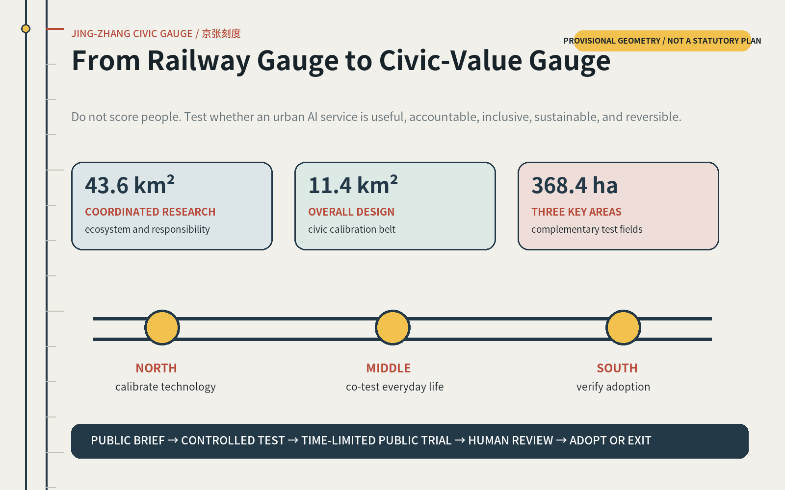
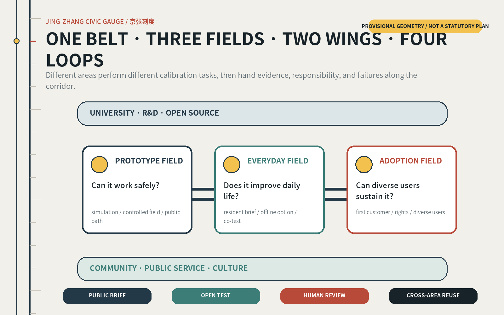
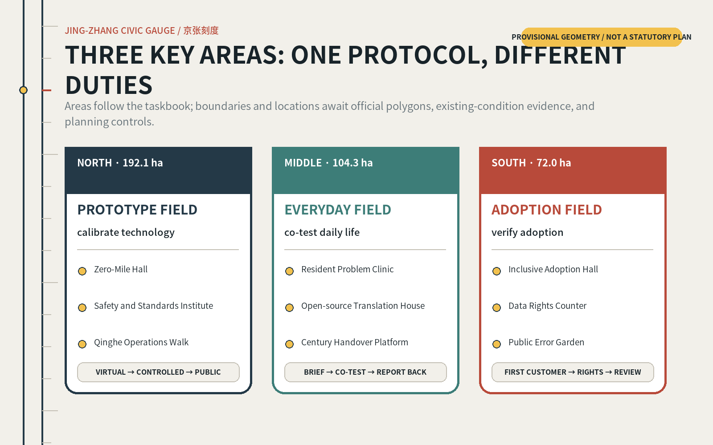
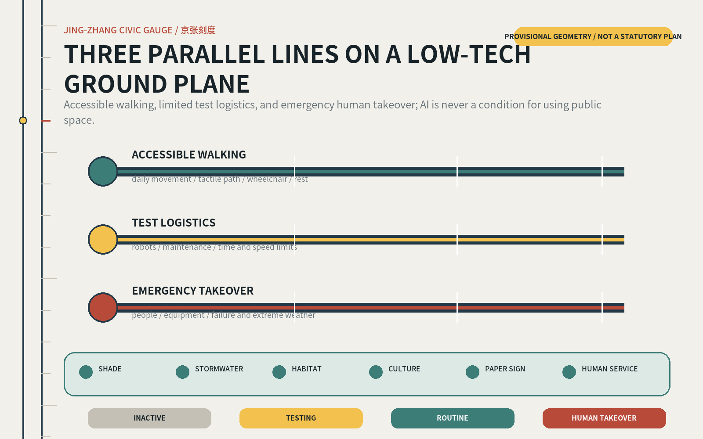
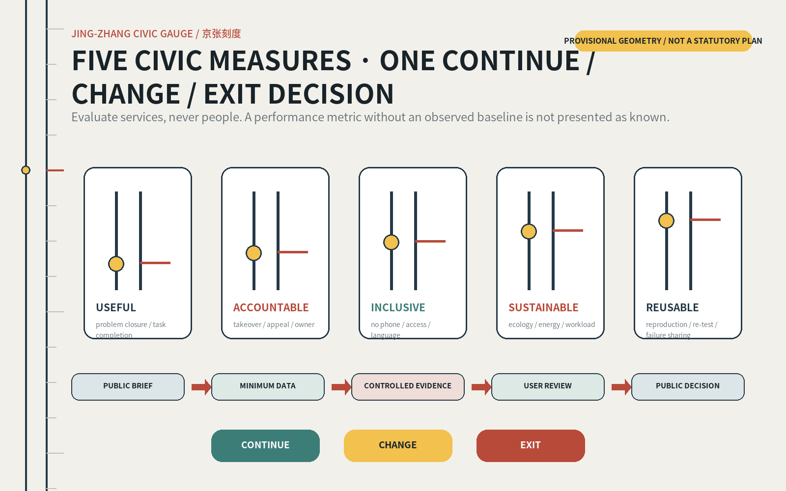

Overview Map
The three scope levels form one public-validation loop.

Centennial Jing-Zhang AI Innovation Belt Open Proposal
Calibrate technology in the north, co-test everyday life in the middle, and verify inclusive adoption in the south. Every service stays visible, reviewable, reversible, and paired with a human channel.
PROVISIONAL GEOMETRY · NOT A STATUTORY PLAN · RECALCULATE WITH OFFICIAL DATA
The three scope levels form one public-validation loop.

One belt, three fields, two wings, and four loops; land use is a topology-safe schematic only.

One protocol, different duties: technology, everyday life, adoption.

The low-tech ground plane works first; AI remains optional and reversible.

Never score people; use five civic measures to continue, change, or exit.

Transfer testing, transparency, time limits, mixed urbanity, networks, adoption, and governance - never copy form.
S01-S04 are explicit validation scenarios; every scenario includes a human and low-tech alternative.
Landmark value comes from public responsibility and learnable failure, not oversized form.
These values validate provisional submission geometry; they are not planning controls.
Calibrate data first, then run reversible pilots. Phasing is a reference scheme, not a government schedule.
Official data request, actor map, accessible co-walk.
Temporary hall, takeover desks, four validation scenarios.
Handovers, walking repairs, open ground floors, annual program.
Operating alliance, public report, professional refinement.
proposal v2 · bilingual contract v1 · 9 GeoJSON layers · 5 paired figures · A3/A0 · offline HTML
Overview · Three-level scope · Key areas · Land use · Mobility · Blue-green public space · Buildings · Renewal projects · AI scenarios · Core metrics · Task coverage · Self-check · Sources · Assumptions